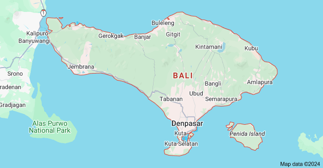

Bali
A magical blend of a colorful culture, friendly people, stunning nature, countless activities, tropical weather, culinary delights, vibrant nightlife, and beautiful accommodations. Bali is rated regularly as one of the best travel destinations in the world – for very good reasons. There is something great for everyone to explore and discover.

Bali is a province of Indonesia and the westernmost of the Lesser Sunda Islands. East of Java and west of Lombok, the province includes the island of Bali and a few smaller offshore islands, notably Nusa Penida, Nusa Lembongan, and Nusa Ceningan to the southeast.